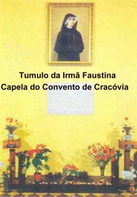
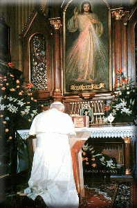
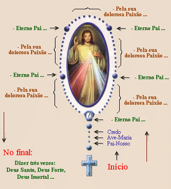
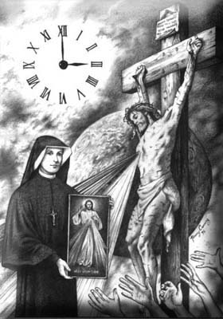
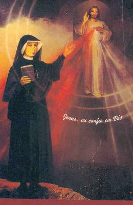
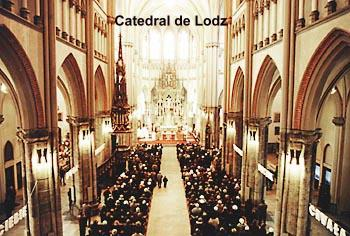
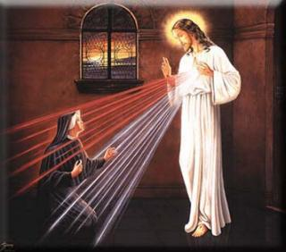

ÚLTIMA VIAGEM
Fisicamente
esgotada acima do limite de suas forças, embora em pleno e lúcido amadurecimento
no 
Em 20 de Setembro de 1967, o Cardeal Karol Wojtyla encerrou, com uma sessão solene, o processo canônico informativo. Todos os documentos contidos no processo foram enviados a Roma.
Em 31 de Janeiro de 1968, por um decreto da Sagrada Congregação para as Causas dos Santos, é formalmente aberto o Processo de beatificação da Serva de DEUS, Irmã Faustina.
Em 18 de Abril de 1993, em Roma, no Domingo da Pascoela (Primeiro Domingo depois da Páscoa), foi beatificada a Irmã Maria Faustina Kowalska, pelo Santo Padre, João Paulo II.
Em 30 de Abril de 2000, em Roma, no Domingo da Pascoela (Primeiro Domingo depois da Páscoa), foi canonizada a Bem-aventurada Faustina Kowalska pelo Santo Padre, Papa João Paulo II.
A FESTA DA MISERICÓRDIA

A escolha por JESUS do Primeiro Domingo após a Páscoa tem um profundo sentido teológico ao mostrar a estreita união que existe entre o Mistério Pascal da Redenção e o Mistério da Misericórdia de DEUS. Misericordiosamente o SENHOR assumiu todos os pecados da humanidade e aceitou morrer como o mais vulgar e vil bandido, pregado numa Cruz, derramando o seu precioso e sagrado Sangue sobre todas as gerações. Misericordiosamente o Sangue do SENHOR consolou o PAI ETERNO por causa do Pecado Original e dos Pecados Subsequentes e, gerou para todos os povos a graça Redentora, propiciando condições de vida, e vida em plenitude. Por essa razão, a Festa não se resume apenas naquele dia para, de um modo especial, a humanidade louvar a DEUS no Mistério da Misericórdia, mas descortina um tempo admirável de graça para todos nós. JESUS disse: “Desejo que a Festa da Misericórdia seja refúgio e abrigo para todas as almas, especialmente para os pecadores”. (Diário – parágrafo 699 – página 211) “As almas se perdem, apesar da Minha amarga Paixão. Estou lhes dando a última esperança de salvação, isto é, a Festa da Minha Misericórdia. Se não venerarem a Minha Misericórdia, perecerão por toda eternidade”. (Diário – parágrafo 965 – página 271)
A grandeza desta Festa só pode ser avaliada pelas extraordinárias e notáveis Promessas que NOSSO SENHOR a ela atribuiu: “Neste dia, estão abertas as entranhas da Minha misericórdia. Derramo todo um mar de graças sobre as almas que se aproximam da fonte da Minha misericórdia. A alma que se confessar e comungar alcançará o perdão das culpas e das penas. Nesse dia, estão abertas todas as comportas Divinas, pelas quais fluem as graças. Que nenhuma alma tenha medo de se aproximar de MIM, ainda que seus pecados sejam como o escarlate”. (Diário – parágrafo 699 – página 211)
Evidentemente, só alcançaremos estes benefícios e graças de NOSSO SENHOR se cumprirmos as condições da Devoção a Misericórdia Divina: ter plena confiança na bondade de DEUS, cultivar o amor ao próximo, estar em “estado de graça” ou alcançar a graça santificante pela Confissão Sacramental, e dignamente receber o SENHOR na Sagrada Eucaristia. JESUS disse: “Nenhuma alma terá justificação (o perdão dos seus pecados), enquanto não se dirigir, com confiança, à Minha misericórdia”. (Diário – parágrafo 570 – página 181)
TERÇO DA MISERICÓRDIA
JESUS ditou este Terço à Irmã Faustina, em Vilna, no dia 14 de Setembro de 1935, como oração de reparação e para aplacar a tristeza e a ira Divina. (conforme Diário - parágrafos 474 – 476) Os que rezam este Terço oferecem ao ETERNO PAI, o Corpo e o Sangue, a Alma e a Divindade de NOSSO SENHOR JESUS CRISTO em reparação dos seus pecados, dos seus entes queridos e de todo o mundo e, unindo-se ao sacrifício de JESUS, recorrem àquele Amor que o PAI CELESTIAL tem para com o Seu FILHO e para com toda humanidade em JESUS CRISTO.
Nesta oração é também pedida a misericórdia para nós e para todo o mundo e, deste modo, cumprindo toda a obra da misericórdia. Assim os fiéis podem esperar o cumprimento das promessas de CRISTO que, de modo especial refere-se à graça da conversão do coração e a uma morte feliz. Receberão esta graça, não só as pessoas que rezam o Terço, mas também os agonizantes, quando alguém reza o Terço por eles. Diz JESUS: “Quando recita esse Terço junto a um agonizante, aplaca-se a ira de DEUS, a misericórdia insondável envolve a alma e abrem-se as entranhas da Minha misericórdia, movida pela dolorosa Paixão do Meu FILHO”. “As almas que rezarem este Terço serão envolvidas pela Minha Misericórdia, durante a sua vida, e de modo particular, na hora da morte”. (Diário – parágrafo 754 – página 222)

MANEIRA DE REZAR O TERÇO DA MISERICÓRDIA
1)Nas três contas juntas, logo após a cruz ou crucifixo do Terço: Primeiro dirás o “PAI NOSSO”, a “AVE MARIA” e o “CREDO”.
2)A seguir, na medalha ou na conta do PAI NOSSO referente ao primeiro mistério do Terço dirá as seguintes palavras: “ETERNO PAI, eu Vos ofereço o Corpo e o Sangue, a Alma e a Divindade de Vosso diletíssimo FILHO, NOSSO SENHOR JESUS CRISTO, em reparação dos nossos pecados e dos (pecados)do mundo inteiro”.
3)Nas contas das AVES MARIA rezará as seguintes palavras: “Pela Sua dolorosa Paixão, tende misericórdia de nós e do mundo inteiro”.
4)E deste mesmo modo, segue rezando ao longo de todo o Terço, substituindo as orações das AVES MARIA e dos PAI NOSSO, pelas orações mencionadas acima.
5)No fim da quinta dezena, quando seria rezado a SALVE RAINHA, rezará três vezes estas palavras: “DEUS Santo, DEUS Forte, DEUS Imortal, tende misericórdia de nós e do mundo inteiro”. (Diário – parágrafo 476 – página 157)
A HORA DA MISERICÓRDIA
Dia 10 de Outubro de 1937,
NOSSO SENHOR disse a Irmã:
“Às três horas da tarde, implora à Minha 
Ainda em Cracóvia, no mês de Outubro de 1937, em circunstâncias não especificadas pela Irmã Faustina, NOSSO SENHOR mandou venerar a Hora da Sua Santa Morte: “Lembro-te, Minha filha, que todas as vezes que ouvires o bater do relógio, às três horas da tarde, deves mergulhar inteiramente na Minha misericórdia, adorando-A e glorificando-A. Implora a onipotência dela em favor do mundo inteiro, e especialmente, dos pobres pecadores, porque nesse momento (a Minha Misericórdia) é largamente aberta para toda alma. Nessa Hora, conseguirás tudo para ti e para os outros”. (Diário – parágrafo 1572 – página 400)
NOSSO SENHOR também recomendou de maneira precisa os meios próprios de oração para o culto da Misericórdia Divina nesse horário: “Minha filha, procura rezar, nessa Hora, a Via Sacra, na medida em que te permitirem os teus deveres, e se não puderes fazer a Via Sacra, entra, ao menos por um momento na Capela e adora o Meu CORAÇÃO, que está cheio de misericórdia no SANTÍSSIMO SACRAMENTO. Se não puderes sequer ir à Capela, recolhe-te em oração onde estiveres, ainda que seja por um breve momento”. (Diário – parágrafo 1572 – página 400)
O Padre Rozycki enumera três providências para que essa oração tenha êxito:
1 – A prece deve ser dirigida a JESUS.
2 – Deve ser feita às três horas da tarde.
3 – Deve recorrer ao valor e méritos da Paixão do SENHOR.
“Nessa HORA”, prometeu NOSSO SENHOR: “conseguirás tudo para ti e para os outros. Nessa HORA, realizou-se a graça para todo o Mundo: a Misericórdia VENCEU a Justiça”. (Diário – parágrafo 1572 – página 400).
JESUS falou a Irmã Faustina: “Invoca a Minha misericórdia para os pecadores, pois desejo a salvação deles. Quando de coração contrito e confiante rezar essa oração por algum pecador, EU lhe darei a graça da conversão. Esta pequena prece é a seguinte”: (Diário parágrafo 186 – página 86)
“Ó Sangue e Água que jorrastes do CORAÇÃO DE JESUS como Fonte de Misericórdia para nós, eu confio em Vós”! (Diário – parágrafo 187 – página 86).
NOVENA À DIVINA
MISERICÓRDIA

“Desejo que, durante estes nove dias, conduzas as almas à fonte da Minha misericórdia, a fim de que recebam força, alívio e todas as graças de que necessitam nas dificuldades da vida e, especialmente na hora da morte. Cada dia conduzirá ao Meu CORAÇÃO um grupo diferente de almas e as mergulharás nesse oceano da Minha misericórdia. EU conduzirei todas essas almas à Casa de Meu PAI. Procederás assim nesta vida e na futura. Por Minha parte, nada negarei àquelas almas que tu conduzirás à fonte da Minha misericórdia. Cada dia pedirá a Meu PAI, pela Minha amarga Paixão, graças para essas almas”.
A Irmã respondeu: “JESUS, não sei como fazer essa Novena e que almas conduzir em primeiro lugar ao Vosso compassivo CORAÇÃO”.
JESUS então disse a Irmã que ELE lhe dirá, dia a dia, quais almas ela deverá conduzir ao Seu Sagrado e Misericordioso CORAÇÃO. (Diário – parágrafo 1209 – página 314)
Podemos rezar a Novena em qualquer época do ano, sempre que o nosso coração sensibilizado queira agradar ao SENHOR e, naturalmente, devemos rezá-la também como preparação a Festa da Misericórdia Divina, começando na Sexta Feira da Paixão.
PRIMEIRO DIA
“Hoje, traze-ME a Humanidade inteira, especialmente todos os pecadores e mergulha-os no oceano da Minha misericórdia. Com isso ME consolarás na amarga tristeza em que a perda das almas ME afunda”.
Misericordiosíssimo JESUS, de quem é próprio ter compaixão de nós e de nos perdoar, não olheis os nossos pecados, mas a confiança que depositamos em Vossa infinita bondade. Acolhei-nos na mansão do Vosso compassivo CORAÇÃO e nunca nos deixeis sair DELE. Nós Vos pedimos pelo Amor que Vos une ao PAI e ao ESPÍRITO SANTO.
Ó onipotência
da misericórdia Divina,
Socorro para o homem pecador
Vós sois o oceano de misericórdia e de amor.
E ajudais a quem Vos pede humildemente.
Eterno PAI olhe com misericórdia para toda humanidade, encerrada no CORAÇÃO compassivo de JESUS, mas especialmente para os pobres pecadores. Pela Sua dolorosa Paixão mostrai-nos a Vossa misericórdia, para que glorifiquemos a onipotência da Vossa misericórdia, pelos séculos dos séculos. Amém. (Diário – Parágrafos 1210 e 1211 – páginas 314 e 315)
SEGUNDO DIA
“Hoje, traze-ME as almas dos sacerdotes e religiosos e as mergulha na Minha insondável misericórdia. Elas ME deram força para suportar a amarga Paixão. Por elas, como por canais, corre sobre a humanidade a Minha misericórdia”.
Misericordiosíssimo JESUS, de quem provém tudo o que é bom, aumenta em nós a graça, para praticarmos dignas obras de misericórdia, a fim de que as pessoas olhando para nós glorifiquem o PAI da Misericórdia, que está no Céu.
A fonte do Amor Divino,
Mora nos corações puros,
Banhados no mar da Misericórdia,
Brilhantes como as estrelas, luminosos como a aurora.
Eterno PAI dirija o olhar da Vossa misericórdia para a porção eleita da Vossa Vinha: para as almas dos sacerdotes e religiosos. Concedei-lhes o poder da Vossa bênção e, pelos sentimentos do CORAÇÃO de Vosso FILHO, no qual estão encerradas, lhes dê a força da Vossa Luz, para que possam guiar os outros nos caminhos da salvação, e juntamente com eles cantar a glória da Vossa insondável misericórdia, pelos séculos eternos. Amém. (Diário – Parágrafos 1212 e 1213 – página 315)
TERCEIRO DIA
“Hoje, traze-ME todas as almas piedosas e fiéis e as mergulha no oceano da Minha misericórdia. Essas almas ME consolaram na Via Sacra, foi àquela gota de consolação em meio ao mar de amarguras”.
Misericordiosíssimo JESUS, que concedeis prodigamente a todos as graças do tesouro da Vossa misericórdia, acolhei-nos na mansão do Vosso compassivo CORAÇÃO e não nos deixeis sair dele pelos séculos. Nós Vos suplicamos pelo Amor inconcebível de que está inflamado o Vosso CORAÇÃO para com o PAI Celestial.
As
maravilhas da misericórdia são insondáveis;
Nem o pecador nem o justo as entenderá;
Para todos os que olham com compaixão
A todos atraís para o Vosso Eterno Amor.
Eterno PAI olhe com o olhar da Vossa misericórdia para as almas fiéis, como a herança do Vosso FILHO. Pela Sua dolorosa Paixão concedei-lhes a Vossa bênção e as cercai da Vossa incessante proteção, para que não percam o amor e o tesouro da santa fé, mas com toda a multidão dos Anjos e dos Santos glorifiquem a Vossa imensa misericórdia, por toda eternidade. Amém. (Diário – Parágrafos 1214 e 1215 – páginas 315 e 316)
QUARTO DIA
“Hoje, traze-ME os pagãos e aqueles que ainda não ME conhecem e nos quais pensei na Minha amarga Paixão. O seu futuro zelo consolou o Meu CORAÇÃO. Mergulha-os no mar da Minha misericórdia”.
Misericordiosíssimo JESUS, que sois a Luz do mundo, aceite na mansão do Vosso compassivo CORAÇÃO as almas dos pagãos que ainda não Vos conhecem. Que os raios da Vossa graça os iluminem para que também eles, juntamente conosco, glorifiquem as maravilhas da Vossa misericórdia e não os deixeis sair da mansão do Vosso compassivo CORAÇÃO.
Que a luz do Vosso Amor
Ilumine as trevas das almas!
Fazei que essas almas Vos conheçam
E glorifiquem a Vossa misericórdia, juntamente conosco!
Eterno PAI olhe com misericórdia para as almas dos pagãos e daqueles que ainda não Vos conhecem e que estão encerrados no CORAÇÃO compassivo de JESUS. Atraí-as à luz do Evangelho. Essas almas não sabem que grande felicidade é amar-VOS. Fazei com que também elas glorifiquem a riqueza da Vossa misericórdia, por toda a eternidade. Amém. (Diário – Parágrafos 1216 e 1217 – Página 316)
QUINTO DIA
“Hoje, traze-ME as almas dos cristãos separados da unidade da Igreja e os mergulha no mar da Minha misericórdia. Na Minha amarga Paixão dilaceravam o Meu Corpo e o Meu CORAÇÃO, isto é, a Minha Igreja. Quando voltam à unidade da Igreja, cicatrizam-se as Minhas Chagas e dessa maneira eles aliviam a Minha Paixão”.
Misericordiosíssimo JESUS, que sois a própria Bondade, não negue a luz àqueles que Vos pedem, aceite na mansão do Vosso compassivo CORAÇÃO as almas dos nossos irmãos separados e os atraí pela Vossa Luz à unidade da Igreja e não os deixeis sair da mansão do Vosso compassivo CORAÇÃO, mas fazei com que também eles glorifiquem a riqueza da Vossa misericórdia.
Mesmo para
aqueles que rasgaram o manto da Vossa unidade,
Fluí do Vosso CORAÇÃO uma fonte de compaixão;
O poder da Vossa misericórdia, ó DEUS
Pode tirar também essas almas do erro.
Eterno PAI olhe com misericórdia para as almas dos nossos irmãos separados que esbanjaram os Vossos bens e abusaram das Vossas graças, permanecendo teimosamente nos seus erros. Não olheis para os seus erros, mas para o Amor do Vosso FILHO e para a Sua amarga Paixão, que suportou por eles, pois também eles estão encerrados no CORAÇÃO compassivo de JESUS. Fazei com que também eles glorifiquem a Vossa misericórdia por todos os séculos eternos. Amém. (Diário – Parágrafos 1218 e 1219 – páginas 316 e 317)
SEXTO DIA

Misericordiosíssimo JESUS, que dissestes: Aprendei de MIM, que sou manso e humilde de CORAÇÃO, aceitai na mansão do Vosso compassivo CORAÇÃO as almas mansas e humildes e as almas das criancinhas. Essas almas encantam o Céu e são a especial predileção do PAI Celeste. São como um ramalhete de flores diante do Trono de DEUS, cujo perfume o próprio DEUS se deleita. Essas almas têm a mansão permanente no Vosso CORAÇÃO compassivo e cantam sem cessar um hino de amor e misericórdia pelos séculos.
A
alma verdadeiramente humilde e mansa
Já respira aqui na Terra o ar do Paraíso,
E o perfume do seu coração humilde
Encanta o próprio CRIADOR.
Eterno PAI olhe com misericórdia para as almas mansas, humildes e para as almas das criancinhas, que estão encerradas na mansão compassiva do CORAÇÃO DE JESUS. Estas almas são as mais semelhantes ao Vosso FILHO. O perfume destas almas eleva-se da Terra e alcança o Vosso Trono. PAI de Misericórdia e de toda Bondade, suplico-Vos pelo Amor e predileção que tendes para com estas almas: abençoai o mundo todo, para que todas as almas cantem juntamente a glória à Vossa misericórdia, pelos séculos eternos. Amém. (Diário – Parágrafos 1220/1221/1222 e 1223 – página 317)
SÉTIMO DIA
“Hoje, traze-ME as almas que veneram e glorificam de maneira especial a Minha misericórdia e as mergulha na Minha misericórdia. Estas almas foram as que mais sofreram por causa da Minha Paixão e penetraram mais profundamente no Meu espírito. Elas são a imagem viva do Meu CORAÇÃO compassivo. Estas almas brilharão com um especial fulgor na vida futura. Nenhuma delas irá ao fogo do Inferno. Defenderei cada uma de maneira especial na hora da morte”.
Misericordiosíssimo JESUS, cujo CORAÇÃO é o próprio Amor, aceitai na mansão do Vosso compassivo CORAÇÃO, as almas que honram e glorificam de maneira especial a grandeza da Vossa misericórdia. Estas almas tornadas poderosas pela força do próprio DEUS avançam entre penas e adversidades, confiando na Vossa misericórdia. Estas almas estão unidas a Vós e carregam sobre seus ombros a humanidade. Elas não serão julgadas severamente, mas a Vossa misericórdia as envolverá no momento da morte.
A
alma que glorifica a bondade do SENHOR
É por ELE especialmente amada;
Ela está sempre próxima da fonte viva
E bebe as graças da misericórdia Divina.
Eterno PAI olhe com misericórdia para as almas que glorificam e honram o Vosso maior atributo, isto é, a Vossa Insondável Misericórdia. Elas estão encerradas no CORAÇÃO compassivo de JESUS. Estas almas são o Evangelho vivo e as suas mãos estão cheias de obras de misericórdia; suas almas repletas de alegria cantam um hino da misericórdia ao ALTÍSSIMO. Suplico-Vos, ó DEUS, mostrai-lhes a Vossa Misericórdia segundo a esperança e a confiança que em Vós colocaram. Que se cumpra nelas a promessa de JESUS, que disse: “As almas que veneram a Minha Insondável Misericórdia, EU Mesmo as defenderei durante a sua vida, e especialmente na hora da morte, como Minha glória. Amém”. (Diário – Parágrafos 1224 e 1225 – páginas 317/318)
“Hoje, traze-ME
as almas que se encontram na prisão do Purgatório e as mergulhe no abismo da Minha 
Misericordiosíssimo JESUS, que dissestes que quereis misericórdia, eis que estou trazendo à mansão do Vosso compassivo CORAÇÃO as almas do Purgatório, almas que Vos são muito queridas e, no entanto, devem dar reparação a Vossa Justiça. Que as torrentes de Sangue e Água que brotaram de Vosso CORAÇÃO apaguem as chamas do fogo do Purgatório, para que também ali seja glorificado o poder da Vossa misericórdia.
Do
terrível ardor do fogo do Purgatório
Ergue-se um lamento (das almas) à Vossa misericórdia:
E recebem consolo, alívio e conforto
Na torrente derramada do Sangue e da Água.
Eterno PAI olhe com misericórdia para as almas que sofrem no Purgatório e que estão encerradas no CORAÇÃO compassivo de JESUS. Suplico-Vos que, pela dolorosa Paixão de JESUS, Vosso FILHO, e por toda amargura de que estava inundada a Sua Santíssima Alma, mostreis Vossa Misericórdia às almas que se encontram sob o olhar da Vossa Justiça. Não olheis para elas de outra forma senão através das Chagas de JESUS, Vosso FILHO muito amado, porque nós cremos que a Vossa Bondade e Misericórdia são incomensuráveis. Amém. (Diário – Parágrafos 1226/1227 – páginas 318 e 319)
NONO DIA
“Hoje, traze-ME as almas tíbias e as mergulhe no abismo da Minha misericórdia. Estas almas ferem mais dolorosamente o Meu CORAÇÃO. Foi da alma tíbia que a Minha alma sentiu repugnância no Jardim das Oliveiras. Elas ME levaram a dizer: PAI afasta de MIM este Cálice, se assim for a Vossa Vontade. Para elas, a última tábua de salvação é recorrer à Minha misericórdia”.
Ó compassivo JESUS, que sois a própria compaixão, trago à mansão do Vosso compassivo CORAÇÃO as almas tíbias; que se aqueçam no fogo do Vosso Amor puro estas almas geladas que se assemelham a cadáveres. Enchem-vos de tanta repugnância. Ó JESUS, muito compassivo, usai a onipotência da Vossa misericórdia e as atraí até o fogo do Vosso Amor e concedei-lhes o amor santo, porque Vós tudo podeis.
O
fogo e o gelo não podem ser unidos,
Porque ou o fogo se apaga, ou o gelo se derrete;
Mas a Vossa misericórdia, ó DEUS,
Pode auxiliar indigências ainda maiores.
Eterno PAI olhe com Vossa misericórdia para as almas tíbias e que estão encerradas no CORAÇÃO compassivo de JESUS. PAI de Misericórdia, eu Vos suplico pela amargura da Paixão de Vosso FILHO e por Sua agonia de três horas na Cruz, permiti que também elas glorifiquem o abismo da Vossa misericórdia. Amém. (Diário – Parágrafos 1228 e 1229 – página 319)